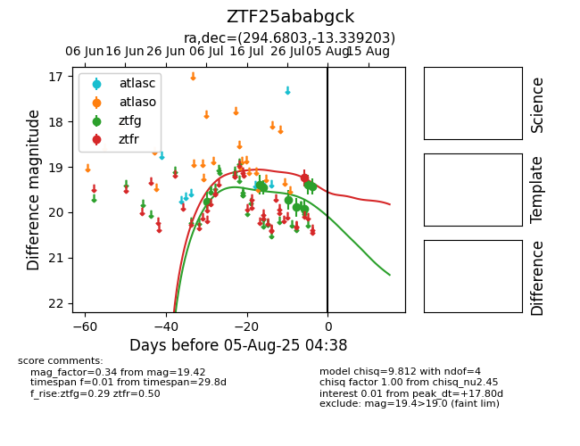

Target ZTF25ababgck at 2025-08-05 04:38, see:
FINK: fink-portal.org/ZTF25ababgck
Lasair: lasair-ztf.lsst.ac.uk/objects/ZTF25ababgck
ALeRCE: alerce.online/object/ZTF25ababgck
alt names
ZTF25ababgck (ztf,fink)
coordinates:
equatorial (ra, dec) = (294.6803,-13.33920)
galactic (l, b) = (26.0798,-16.41544)
photometry
last ztfg=19.42, ztfr=19.24
8 ztfg, 1 ztfr detections
